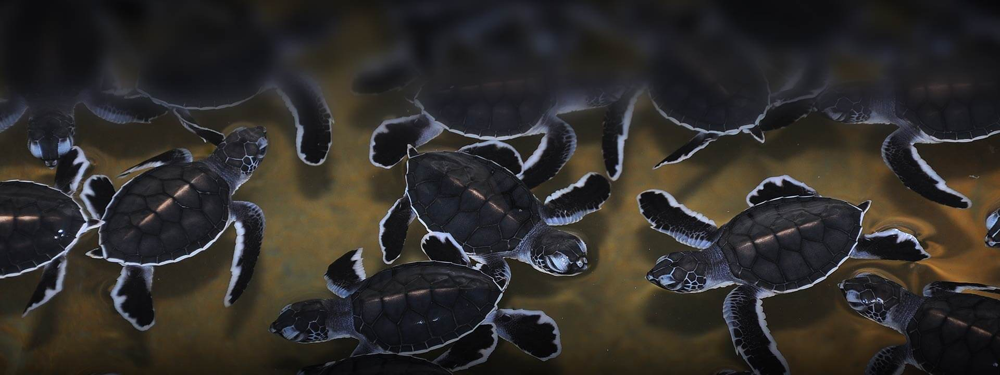

Bentota Turtle Hatchery
About Bentota Turtle Hatchery
The Bentota Turtle Hatchery is a non-profit organization dedicated to the protection and conservation of sea turtles. The hatchery was established in 1981 and has been rescuing and releasing sea turtles into the ocean ever since.
The hatchery offers guided tours where visitors can learn about sea turtles, their habitats, and the conservation efforts being made to protect them. Visitors can also participate in the release of baby turtles into the ocean.
Location
The Bentota Turtle Hatchery is located on Galle Road in Induruwa, just a few kilometers from the town of Bentota. The hatchery is easily accessible by car or public transportation.